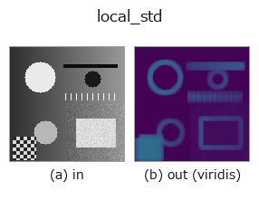

texture op• Data kinds: image → image
• Call: fullseye.apply(img, "local_std", a=0.5, b=0.5) (2-D model = एक image + दो scalar knobs a,b∈[0,1])

*Figure synthetic 128×128 input पर सच में चलाकर मिला output है। बाईं ओर input, दाईं ओर output। Point clouds ऊपर से देखे गए scatter के रूप में (brightness = z), 1-D series line के रूप में, volumes z दिशा में maximum-intensity projection के रूप में, videos बीच के frame के रूप में, complex images amplitude के रूप में, और जो return values चित्र नहीं बन सकते वे स्वयं values के रूप में दिखाए जाते हैं।*
*Output viridis जैसे pseudo-colour में है (गहरा बैंगनी = कम, पीला = अधिक), ताकि distance, phase, orientation, depth जैसे "मात्राओं के field" पढ़े जा सकें।*
Knob a को बदलकर (0.1 / 0.5 / 0.9, दूसरा knob default पर):
▸ local_std: knob a को बदलने का figure (docs site)
Knob b को बदलकर (0.1 / 0.5 / 0.9, दूसरा knob default पर):
▸ local_std: knob b को बदलने का figure (docs site)
दूसरी images पर भी (synthetic scene / photo / coins। ऊपर की row में inputs, नीचे की row में उनके outputs। Knobs default पर):
▸ local_std: दूसरी images पर output (docs site)
*चौथा column colour (H,W,3) input है। यह op channels को पार किए बिना colour संभालता है (colour channel को तीसरे spatial axis की तरह convolve नहीं करता)।*
Local window के अंदर standard deviation को इनपुट की ही इकाई में लौटाता है (normalise नहीं करता)। HALCON के deviation_image (Calculate the standard deviation of gray values within rectangular windows.) के समकक्ष है।
> नीचे का विस्तृत विवरण मूल text में है — सारांश और headings का अनुवाद हो चुका है।
a が窓の幅を、b が窓の高さをそれぞれ 3,5,7,9（_k）に振る —— HALCON の deviation_image(image, width, height) と同じく矩形窓を取れる。
std_filter との違いはここだけで、そこが肝心: std_filter は出力をその画像の最大値で正規化するので、画像をまたいで値を比較できない(弱いテクスチャしか無い画像では雑音が 1.0 まで持ち上がる)。この op は割らないので、別の画像・別の時刻の値とそのまま比べられる。HALCON の deviation_image も正規化しないので、意味としてはこちらが忠実。平滑化フィルタの sigma_image とは別物(あちらは σ を使って平滑化する)。
推定量と誤差(閉形式): 窓の画素数を n = 幅 x 高さ として、平均を引いた分散を n/(n-1) で不偏化し、さらに sigma の残る偏りを c4(n) ≈ 1 - 1/(4n) で抜く。したがって推定はほぼ無偏(実測: 真値の 99.8〜100.1%)。1 画素あたりの相対標準誤差は 1/sqrt(2(n-1)) —— 3x3 窓で約 25%、9x9 窓で約 7.9%(実測が理論と一致)。粗さや雑音量を数字で言うときは、この幅を併記すること。
入力が [0,1] なら出力は 0 以上 0.55 以下(最大は窓の半分が 0・半分が 1 のとき)。
• gallery2d_texture_freq family guide
• Sample data catalog (DL URL / license) — 2-D के लिए skimage.data (BSD/public) + synthetic, 3-D के लिए real data sources (Stanford/PDS आदि) के DL URL।
• Operators का स्रोत और संदर्भ — इस op family के मूल research/methods के स्रोत।
• Algorithm का मानक स्रोत (लेखक, वर्ष) और उपयोग ऊपर की family usage guide में दिए गए हैं।
नीचे का program सच में चलता है, यह जाँचा गया है (figure वाला ही input)। Studio की help में यह block buttons बन जाता है, जिनसे इसे वहीं load करके चलाया जा सकता है।
local_std 0.50 0.50
▸ यह pipeline load करें · Load करके चलाएँ
• gallery2d_texture_freq — py -3.11 examples/gallery2d_texture_freq.py
image को input के रूप में लेते हैं)identity · gaussian · mean_box · bilateral · unsharp · median · min_filter · max_filter
texture)std_filter · local_bimodality · scale_select_std · bootstrap_std_error · structure_tensor_orientation · structure_tensor_coherence · gabor · sk_frangi
*Provenance: ops.py — 2D operator registry. यह per-op note tools/opdocs.py md से अपने-आप generate होता है (हाथ से edit न करें)।*
© 2026 Kazufumi Furuse — Fullseye operator documentation. Licensed under Apache-2.0.